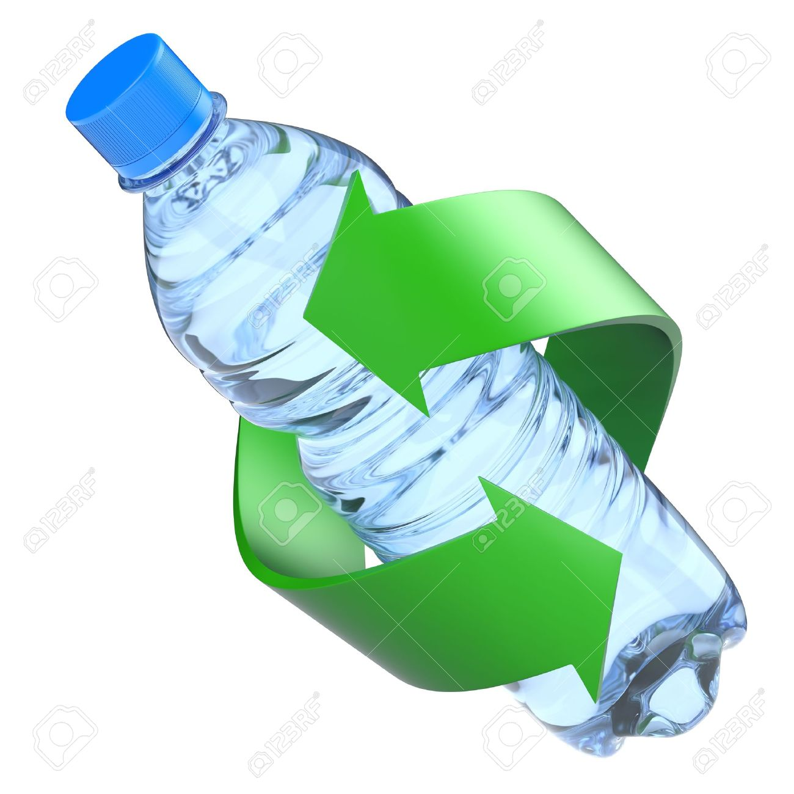

From the Firehose
Plástico
listado de razones desconocidas que nos harán valorar y cuidar al plástico antes de tirarlo a la basura:

- El plástico tiene más capacidad calorífica que el carbón o la madera, por lo que es una ironía que usemos carbón para generar energía y botemos los plásticos. En Europa, la recuperación energética es ampliamente usada, generando energía para barrios residenciales a bajísimo costo y en forma sustentable.
- El plástico nos permite reusar muchos de los productos y materiales que usamos a diario como envases y bolsas de buena calidad.
- Con una sola botella de plástico adecuadamente procesada en una planta moderna de energía se puede generar suficiente energía para mantener una ampolleta de 60 watts encendida por una hora y media.
- Ojo, el plástico de uso post industrial se recicla alrededor del 95% y en el caso de los residuos plásticos de casas se recicla solo un 12,5%.
- Los números que aparecen dentro de las flechas del símbolo de reciclaje en cada producto plástico indican el tipo de plástico del que está hecho el producto.
- Los hechos demuestran que los plásticos permiten ahorrar peso y combustibles en nuestros medios de transporte diarios. 200 kilos menos pesan los automóviles gracias a los plásticos. Esto los hace emitir 7 veces menos carbono.
- En los últimos 20 años el peso de una botella plástica de bebida ha bajado en un 30% promedio, así como el de un bidón de detergente lo ha hecho en un 65%. En promedio, el peso de los envases y embalajes ha bajado un 28% en este período. La industria ha jugado un papel importante en esta reducción. Por ejemplo, en el caso de las bolsas, estas son hoy en día un 70% más livianas y delgadas de lo que eran en 1980 y todas 100% reciclables.
¿Cómo lo Reciclamos?
Para poder llevar a cabo el reciclaje de los residuos plásticos, así como todos los demás residuos, es fundamental la colaboración ciudadana a la hora de la separación selectiva de las basuras. Los ciudadanos separan y determinadas empresas reciclan.
El primer paso para reciclar el plástico es lavarlo. Este paso es muy importante porque en la mayoría de los puntos limpios no reciclan envases que tengan residuos. Después hay que secarlo, separarlo según el tipo de plástico al que corresponda y llevarlo a un punto limpio o de segregación. Ahí se depositan en distintos contenedores, se compactan y son llevados a una planta de reciclaje, donde se pica muy chico, se vuelve a lavar, se derrite y se compacta para convertirlo en una pequeña mostacilla de plástico llamada pelet. Esos pelet son vendidos a empresas, que los utilizan para crear nuevos empaques de plástico.
Pero no es llegar y reciclar. La eficacia del reciclaje del plástico depende del punto limpio al que se vaya y del tipo de plástico del que se trate. “Generalmente, todos los sistemas que digan ‘aquí recibimos plásticos’, lo único que hacen es reciclar el PET, que son las botellas, y el resto lo botan a la basura. Nosotros abrimos la gama de plásticos para que la gente que hace la pega de separar las cosas en la casa tenga la certeza de que lo que está llevando a nuestro punto limpio sí va a reciclarse y va a ir a parar a un vertedero”, dice Tomás García, creador de Tri Ciclos, una iniciativa que cuenta con 56 puntos limpios a lo largo de Chile.
Sub-heading
Cum sociis natoque penatibus et magnis dis parturient montes, nascetur ridiculus mus.
Aenean lacinia bibendum nulla sed consectetur. Etiam porta sem malesuada magna mollis euismod. Fusce dapibus, tellus ac cursus commodo, tortor mauris condimentum nibh, ut fermentum massa.
Sub-heading
Cum sociis natoque penatibus et magnis dis parturient montes, nascetur ridiculus mus. Aenean lacinia bibendum nulla sed consectetur. Etiam porta sem malesuada magna mollis euismod. Fusce dapibus, tellus ac cursus commodo, tortor mauris condimentum nibh, ut fermentum massa justo sit amet risus.
- Praesent commodo cursus magna, vel scelerisque nisl consectetur et.
- Donec id elit non mi porta gravida at eget metus.
- Nulla vitae elit libero, a pharetra augue.
Donec ullamcorper nulla non metus auctor fringilla. Nulla vitae elit libero, a pharetra augue.
- Vestibulum id ligula porta felis euismod semper.
- Cum sociis natoque penatibus et magnis dis parturient montes, nascetur ridiculus mus.
- Maecenas sed diam eget risus varius blandit sit amet non magna.
Cras mattis consectetur purus sit amet fermentum. Sed posuere consectetur est at lobortis.